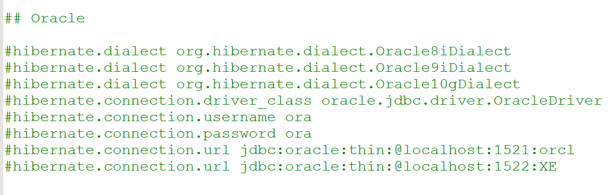

第二十课. ID生成策略 XML 配置.
之前我们对于不管是Teacher类还是Student类，都采用手动设置的方式来生成id，现在我们采用自动生成的方式来生成id号。在xml中它的配置就是Generate参数：
具体的参数配置如下：
下面我们将
TeacherTest类复制过来，改名叫做HibernateIDTest，并且进行修改，屏蔽掉原先对于id的设置，在Student.hbm.xml中对id进行配置：
这样每插入一条数据都会形成一个独一无二的id号。
我们运行一下：
上面那个id就是hibernate自动帮我们生成的。
如果我们将generate class的值改成native，那么hibernate就会帮我们从1开始，每次以递增1的方式来生成id。
第二十一课. ID生成策略XML配置-Annotatio配置
generate class里面常用四个：native identity sequence uuid（跨平台 native uuid）
下面我们验证一下native跨平台：
先查询一下_Student：
根据native规则，它是从1开始生成id的。
之前我们的操作都是在MySql上进行的，下面我们不改代码，只改配置，看看在Oracle上能不能跑这个代码。
我们先找到
hibernate-distribution-3.3.2.GA-dist\hibernate-distribution-3.3.2.GA\project\etc这个文件夹，在这个文件夹下找到hibernate.properties文件进行参考，看到对Oracle的配置是：

基于这个参考，我们修改我们的hibernate.cfg.xml:
注意的是上面需要引入oracle的classes12.jar包，而且版本得兼容
由于oracle中表名不能以下划线开头，所以我们需要修改Teacher.java，去掉一行：@Table(name = "_Teacher")
我们执行一下，控台输出这样的话：
说明使用hibernate，在oracle中帮我们生成了sequence
这是使用xml方式生成的，那么如何使用注解方式呢？
我们再回到Mysql，把配置改回去。
我们再Teacher类的getId方法上面加上一句注解：
我们模仿TestTeacher.java在HibernateIDTestzhong 写一个测试代码：
运行可以看到：
发现注解简单了很多。而且id生成以后，oracle是sequence，mysql是auto_increment
注解方式：@GeneratedValue
a) 自定义ID
b) AUTO(直接写 @GeneratedValue 相当如native)
i. 默认：对 MySQL,使用auto_increment
ii. 对 Oracle使用hibernate_sequence(名称固定）
c) IDENTITY(@GeneratedValue(strategy=GenerationType.IDENTITY))
d) SEQUENCE(@GeneratedValue(strategy=GenerationType.SEQUENCE))
i. @SequenceGenerator(可自定义在数据库生成指定的sequence名)
|
|
第二十三课. ID生成策略 Annotation配置 Table Generator
e) TABLE (可以忘记)
i. @TableGenerator
配置Teacher.java：
运行时报错，发现原因是由于Teacher.java中的key和value在mysql中都是关键词，所以会报错，所以我们修改如下：
如果我们想跨平台，可以使用这种方式。
第二十四课. ID生成策略 联合主键 XML
Xml方式: composite-id
i. 将联合主键的属性提取出来,重新编写一个pojo类（原pojo类中的id，name要删除 并新加入属性“StudentPK”）
ii. 新建pojo类必须实现 java.io.Serializable 序列化接口
iii. 新pojo类要重写equals和hashCode方法
iv. 联合主键生成策略XML配置方法
第二十五课. ID生成策略 联合主键 Annotation
Annotation
i. 前三步与Xml方式前三步一样 都要建立新pojo类 都要实现Serializable接口 重写equals和hashCode方法.
ii. 方法1在新类前写@Embeddable，在原pojo类的新属性“TercherPK”的get方法前写@ld，如下
iii. 方法2：@EmbeddedlD(*) 新pojo类无需加注解，只需在原pojo类新属性“TercherPK”的get方法前写@EmbeddedlD即可
iv. 方法3：@ld @IdClass(*) 新pojo类无需加注解，原pojo类的id，name属性保留不变，也无需新增“TercherPK”属性。 只在id，name的get方法前都加@Id，并在原pojo类前加“@IdClass(TeacherPK).class)”，如下
上面的三种注解方式，第二种最常见，第三种也比较常用。